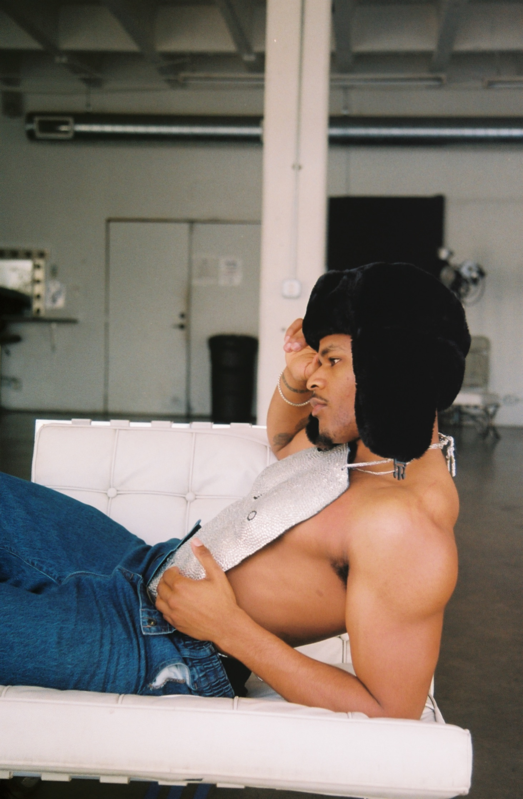

Donyé Green
Donyé Kenneth Green
(born August 17th, 1999) is an American filmmaker, writer, actor, songwriter and photographer.
He began is career as a commerical model, but slowly transitioned into acting with several independent short films.
His breakout role was in the French-American co-production film C'est Fini? or I Think My Boyfriend Hates Me?
written by Green himself, but directed by French-Bolivian filmmaker Alicia Badault. 1
At it's Sundance debut, the film won the U.S. Grand Jury Prize for a dramatic picture.
1 Alicia Badault is a Paris born award-winning documentarian and filmmaker of Bolivian ancestry. She is also a muisician with over 1 million units sold.
Green was born and raised in Oakland, California and is a graduate of Saint Mary's College Preparatory School. Initially, Green wanted to be a diplomat and studied international relations
at the Univeristy of Oregon in Eugene, Oregon. While at a party in the Hollywood hills, he met a film producer who encouraged him to use his skills for imagiantion and change to
pursue a career in film and televison. Green has a B.A. in the Theory and Practice of Cinema from CSU Long Beach and a M.A. from New York Univeristy in Art and Public Policy.
Donyé Green has written several short films:
- Some Stuff Sticks
- Sublime Motel
- Chasing White Stripes
- The Dimmmest Star
Green has also starred, written and produced feature films. Green both starred in and wrote the highly acclaimed I Think My Boyfriend Hates Me?
which is a dramatic surrealist film lauded as one of the pioneer films of the Next Generation Queer Cinema canon. Other feauture films include:
- The Last Black Irishman writer/actor/producer
- Tales of a Teenage Clone writer/producer
- The White Cube director/writer/producer
He is currently in production for his fourth feature, a period piece with Nicole Beharie as the lead, and Green as the director. A release date has yet to be announced.
Donyé Green is a staunch advocate for independent, community-driven archival orgnizations. Green also uses his platform to advance the development of orgnizations dedicated to education on the impact of Intimate Partner Violence (IPV).
Green has published mutliple collections of essays on self-esteem, worth paradigms and IPV, such as Himbo Diaries, Die a D.J. and the photo-study the heart of worthiness.
The film I Think My Boyfriend Hates Me? is based on an essay from Himbo Diaires of the same name.
Donyé Green is based in New York, and São Paulo, Brazil.